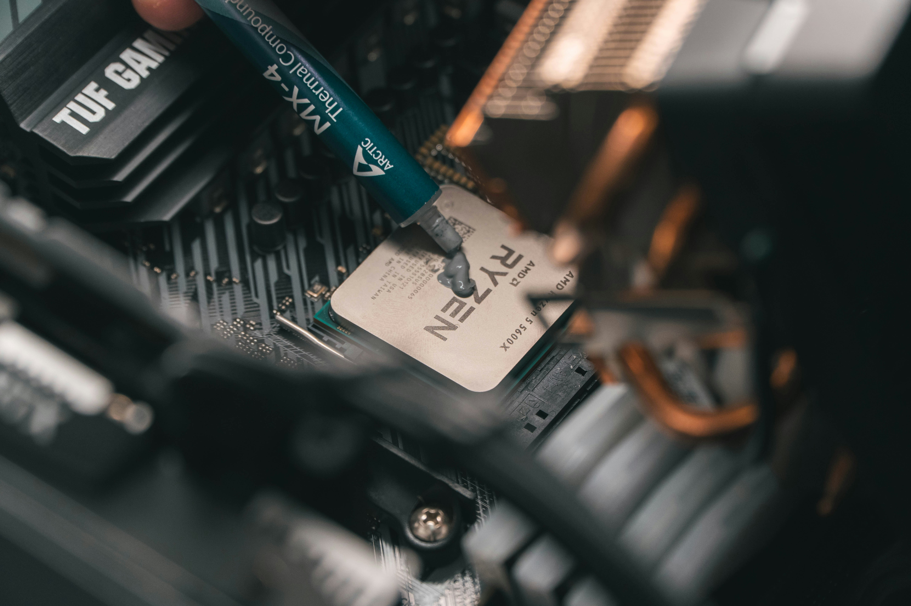
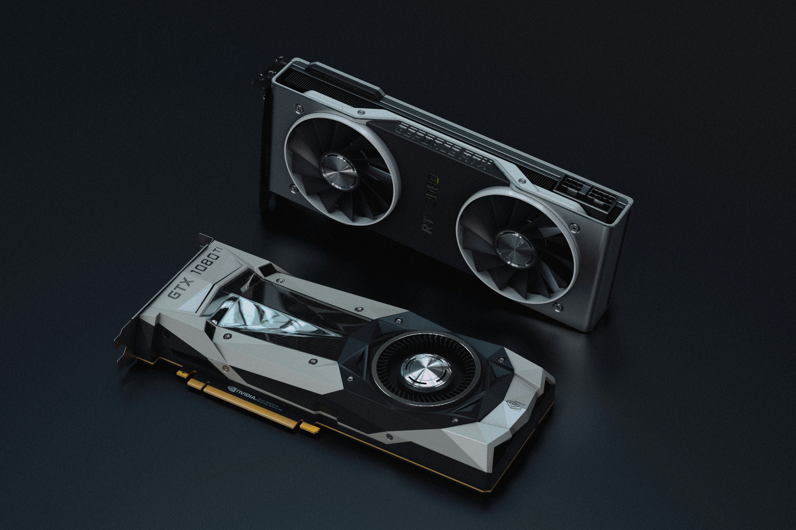
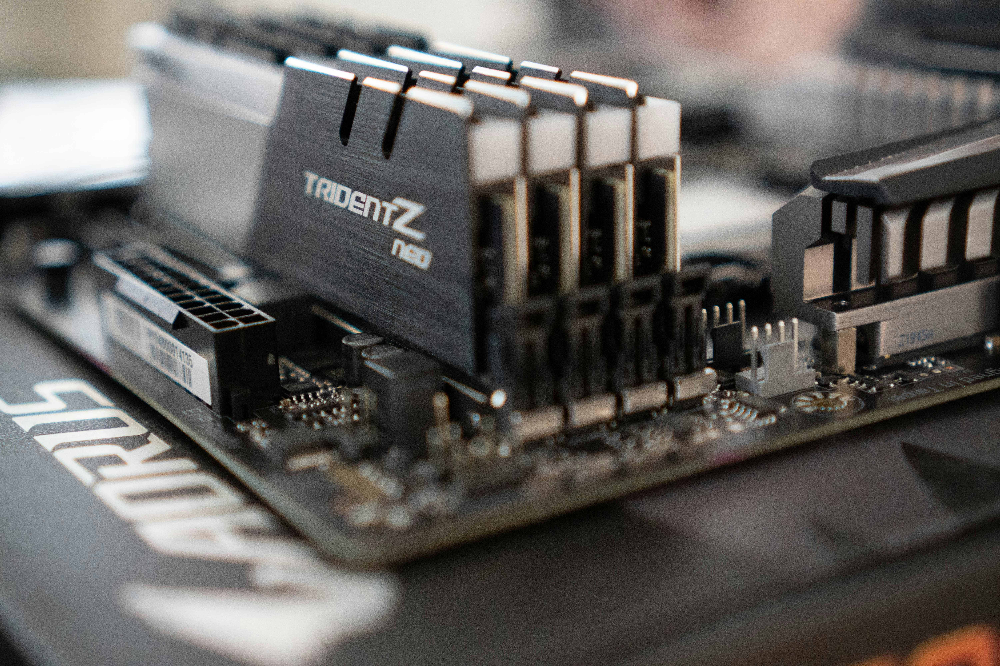
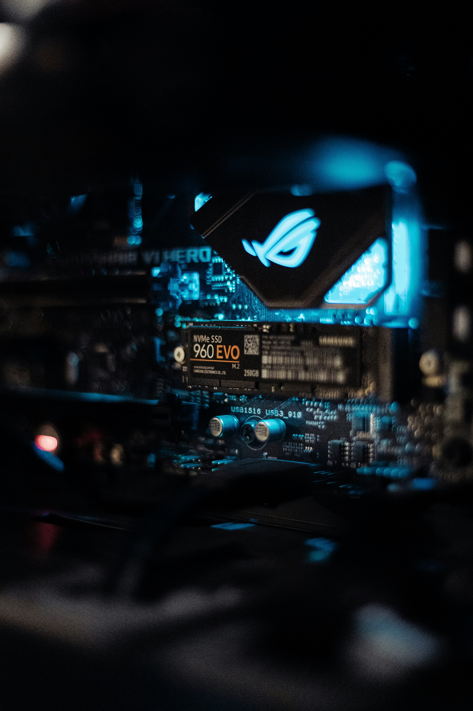
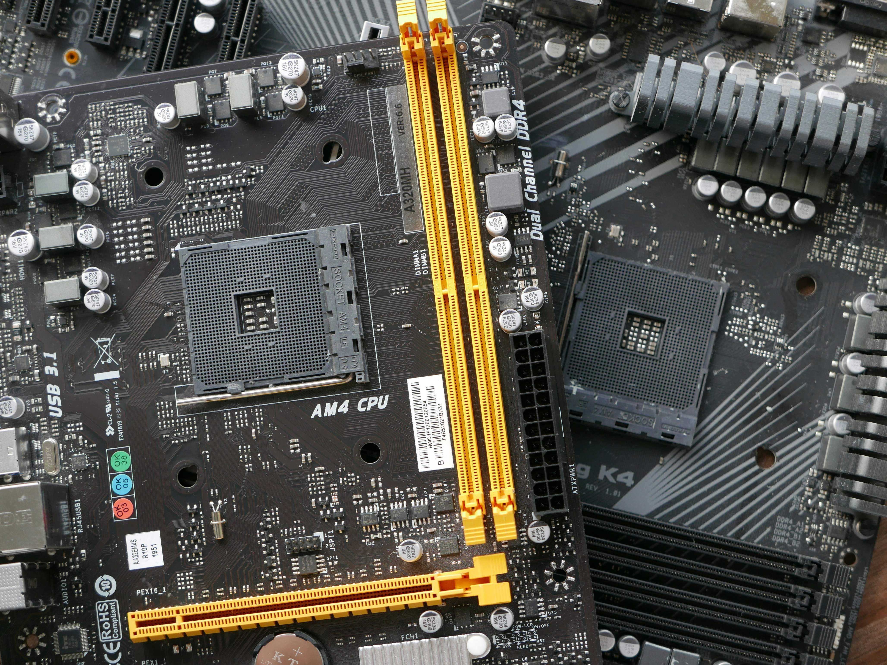

The Parts You Need
Every PC needs these six main parts. Here is what each one does in plain English.
Processor (CPU)
The brain of the computer. It runs programs and handles instructions.

Graphics Card (GPU)
Draws everything you see, especially games and video.

Memory (RAM)
Short-term memory. More RAM lets you keep more things open at once.

Storage (SSD)
Where your files, programs and Windows live. An SSD is much faster than an old hard drive.

Motherboard
The main circuit board that every other part plugs into.

Power Supply (PSU)
Turns wall power into the power your parts need.

Example Part Names
Example motherboard model: PRO-B650M-A-WIFI-MICRO